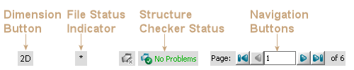

Status Bar of MarvinSketch
The Status Bar appears at the bottom of the main frame, and unlike toolbars, it cannot be customized or moved.
The Status Bar consists of 3 parts:

- Dimension Button
Switches between 2D and 3D modes.
If the current structure is represented in 3D, then switching to 2D mode performs a 2D cleaning upon confirmation.
- File Status Indicator
This sign appears dynamically if there are unsaved modifications on the current structure, and disappears upon a Save command.
- Structure Checker Status
By default it is disabled as seen on the first image. To enable manual checking double-click on it.
Right-click enables automatic checking. The status bar displays different images when there is no problem, if
checking is in progress or if problems were found.
- Navigation Buttons
The Navigation Buttons appearing on the Status Bar dynamically using multipage
molecular documents provide a quick way to navigate between pages.
For information about how to enable multipage molecular documents please visit
this link.